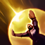

Tirador
/
Mago
Dificultad Moderada
HABILIDADES


PASIVA • FUERZA DE HECHIZO CRECIENTE
Ezreal obtiene velocidad de ataque que aumenta cada vez que acierta uno de sus hechizos. Se acumula hasta 4 veces.
1 • DISPARO MÍSTICO
Ezreal dispara un rayo de energía dañino que reduce ligeramente todos sus enfriamientos si impacta a una unidad enemiga.
2 • FLUJO DE ESENCIA
Ezreal dispara un orbe que se adhiere al primer campeón u objetivo alcanzado. Si Ezreal ataca a un enemigo con el orbe, lo detona e inflige daño.
3 • DESPLAZAMIENTO ARCANO
Ezreal se teletransporta a una ubicación cercana y le dispara un rayo dirigido a la unidad enemiga más cercana. Da prioridad a los enemigos afectados por Flujo de Esencia.
DEFINITIVA • DESCARGA DE TIROS CERTEROS
Ezreal concentra su poder para lanzar una poderosa ráfaga de energía que inflige daño masivo a todas las unidades a su paso (el daño se reduce para súbditos y monstruos no épicos).
CONFIGURACIÓN
OBJETOS
-
Muramaná
3000+25 Daño de Ataque
+1000 Maná Máximo
+20 Aceleración de Habilidad
ASOMBRO: Otorga daño de Ataque igual al 1.5% de Maná Máximo y restaura el 15% de todo el maná gastado.
IMPACTO: Los ataques contra campeones consumen un 3% del Maná actual para infligir el doble de esa cantidad como daño físico adicional, Impacto solo se activa al tener más del 20% del Maná Máximo. -

Fuerza de la Trinidad
3533+200 Vida Máxima
+20 Daño de Ataque
+30% Velocidad de Ataque
+25 Aceleración de Habilidad
FERVOR: +5% de Velocidad de Movimiento.
ESPADA ENCANTADA: Usar una habilidad provoca que el siguiente ataque dentro de 10 seg infija daño físico adicional igual al 200% de Daño de Ataque básico. (1.5 seg de Enfriamiento).
El daño se reduce contra estructuras.
RABIA: Los ataques otorgan 20 de Velocidad de Movimiento y los asesinatos 60 de Velocidad de Movimiento durante 2 seg. Los efectos adicionales no se acumulan. Los campeones a distancia obtienen la mitad de las cantidades. -

Rencor de Serylda
3000+40 Daño de Ataque
+15 Aceleración de Habilidad
ÚLTIMO SUSPIRO: +30% de Penetración de Armadura.
GÉLIDO: Las habilidades activas que infligan daño y los ataques potenciados ralentizan a los enemigos un 30% durante 1 seg. -

Danza de la Muerte
3000+300 Vida Máxima
+35 Daño de Ataque
+15 Aceleración de Habilidad
BAILE: +10% de Vampirismo Físico.
CAUTERIZAR: Un 30% del daño recibido se inflige como efecto de Sangrado durante 3 seg. -

Ángel Guardián
3100+40 Daño de Ataque
+40 Armadura
RESUCITAR: Tras recibir daño letal, te restaura un 50% de la Vida básica y un 30% de Maná tras 4 seg de estasis. (210 seg de enfriamiento).
-

Grebas Glotonas
1000CALZADO: +40 de Velocidad de Movimiento.
SEGUNDOS: +8% de Vampirísmo Físico.
TERCEROS: +8% de Vampirísmo Mágico.
CARRERA (ACTIVA): Aumenta la Velocidad de Movimiento un 15% durante 3 seg. Infligir o recibir daño de campeones desactiva los efectos de Carrera. (60 seg de enfriamiento). -

Encantamiento de Estasis
800ESTASIS (ACTIVA): Te vuelves invulnerable e inalcanzable durante 2.5 seg, pero no puedes moverte, atacar, lanzar habilidades ni utilizar objetos. (120 seg de enfriamiento).
RUNAS Y HECHIZOS
-

Conquistador
Obtienes acumulaciones de fuerza adaptable al atacar a un campeón con habilidades o ataques separados. Se acumula hasta 5 veces. Al alcanzar el máximo de acumulaciones, inflige daño adaptable adicional a campeones.
POR ACUMULACIÓN: 2 - 6 de Daño de Ataque adicional o 3 - 9 de Poder de Habilidad durante 6 seg.
EFECTO ADICIONAL CON EL MÁXIMO DE ACUMULACIONES: Cuerpo a cuerpo: 10% | A distancia: 7% de daño adaptable adicional a campeones. -

Campeón
Obtienes un 8% de daño contra campeones. Pierdes un 4% cada vez que mueres hasta que el efecto desaparezca.
-

Cazador: Titán
Obtienes 20 de Vida Máxima. Los derribos de campeones únicos otorgan 20 de Vida Máxima Y 4% de Tenacidad.
-
Anillo de Flujo de Maná
Alcanzara a un campeón enemigo con una habilidad o ataque potenciado aumenta permanentemente tu Maná Máximo en 30, hasta 300 de Maná.
-

Barrera
ENFRIAMIENTO: 120 seg.
Obtienes un escudo que absorbe 115 de daño (115-465 basado en nivel) durante 2 seg. -

Destello
ENFRIAMIENTO: 150 seg.
Te teletransportas una distancia corta hacia delante o hacia la dirección objetivo.
CÓMO JUGAR EZREAL
Ezreal es un transporte de Dragon Lane que usa una combinación de daño de ataque y poder de habilidad para matar a los enemigos. La principal fuente de daño de Ezreal proviene de sus habilidades. En el juego temprano, Ezreal lucha por mantenerse al día en el daño en comparación con los otros portadores de AD. Sin embargo, Disparo Místico de Ezreal (primera habilidad) es una excelente manera de mantenerse alejado y mantenerse a salvo mientras también golpea por última vez a los súbditos para que pueda obtener los elementos que necesita para llevar el juego. Una vez que Ezreal llega a la mitad y al final del juego y tiene sus elementos principales, puede quedarse atrás y usar sus habilidades para derribar a los enemigos del alcance.